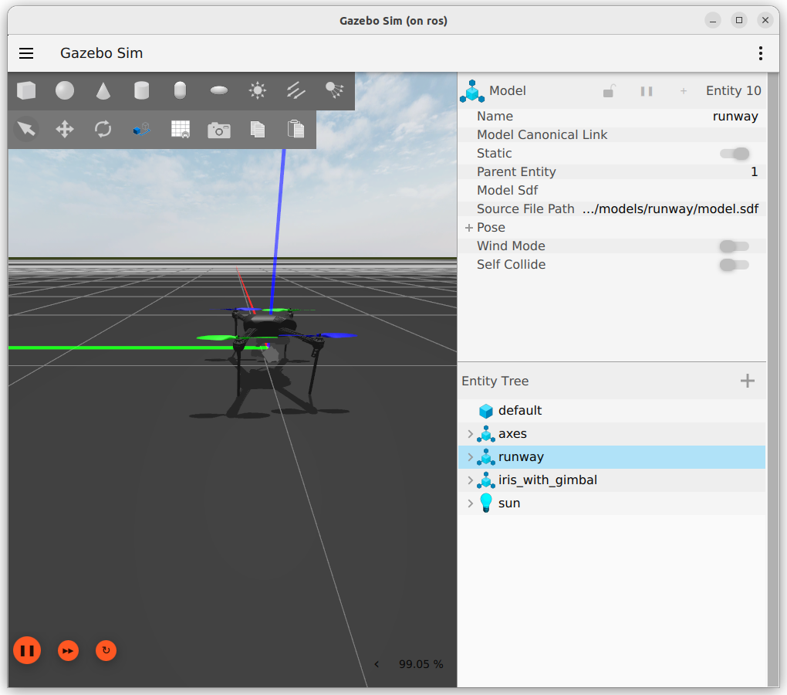

Ardupilot SITL with gazebo and mavros
Robotics / uav / ardupilot
Run Ardupilot SITL (ver 4.6.1) with mavros and gazebo simulation (harmonic)
SITL
Run without gazebo
| run sitl |
|---|
| ./arducopter --model copter --defaults copter.parm -I0
|
| copter.param |
|---|
| FRAME_CLASS 1
FRAME_TYPE 1
SIM_GPS_DISABLE 0
AHRS_EKF_TYPE 2
INS_ACCOFFS_X 0.001
INS_ACCOFFS_Y 0.001
INS_ACCOFFS_Z 0.001
INS_ACCSCAL_X 1.001
INS_ACCSCAL_Y 1.001
INS_ACCSCAL_Z 1.001
INS_ACC2OFFS_X 0.001
INS_ACC2OFFS_Y 0.001
INS_ACC2OFFS_Z 0.001
INS_ACC2SCAL_X 1.001
INS_ACC2SCAL_Y 1.001
INS_ACC2SCAL_Z 1.001
INS_GYR_CAL 0
RNGFND1_TYPE 100 # 100 = simulated
RNGFND1_ORIENT 25 # 25 = Downward (typical for landing)
RNGFND1_MIN_CM 20 # 20 cm minimum range
RNGFND1_MAX_CM 400 # 400 cm max range
SIM_SONAR_SCALE 100 # Scaling for simulated range data
RNGFND1_SCALING 1 # Optional: default scaling
|
INS_XXX
Set INS_XXX for skip the accelerometer calibration
Mavros
| mavros docker snippet |
|---|
| # region install mavros
RUN apt-get update \
&& apt-get -y install --no-install-recommends \
ros-jazzy-mavros \
ros-jazzy-mavros-extras \
&& apt-get clean -y \
&& rm -rf /var/lib/apt/lists/*
RUN ros2 run mavros install_geographiclib_datasets.sh
# endregion install mavros
|
| ros2 launch mavros apm.launch fcu_url:=tcp://:5760@
# forward
ros2 launch mavros apm.launch \
fcu_url:=tcp://localhost:5760 \
gcs_url:=udp://@localhost:14550
|
Gazebo (harmonic)
Clone ardupilot_gazebo into workspace,
- install dependencies
- build with colcon
- source
- and run
| dependencies |
|---|
| sudo apt update
sudo apt install libgz-sim8-dev rapidjson-dev
sudo apt install libopencv-dev libgstreamer1.0-dev libgstreamer-plugins-base1.0-dev gstreamer1.0-plugins-bad gstreamer1.0-libav gstreamer1.0-gl
|

simulation RTF
The simulation real time factor Usually fix after connect with mavros or other GCS to sitl
Usage
| copter-gz.param |
|---|
| FRAME_CLASS 1
FRAME_TYPE 1
|
| terminal 1 |
|---|
| ./arducopter --model JSON --defaults copter-gz.param -I0
|
| terminal 2 |
|---|
| gz sim -v4 -r iris_runway.sdf
|
| terminal 3 |
|---|
| ros2 launch mavros apm.launch fcu_url:=tcp://localhost:5760 gcs_url:=udp://@localhost:14550
|
Guide ARM and takeoff
| set mode |
|---|
| ros2 service call /mavros/set_mode mavros_msgs/srv/SetMode "{base_mode: 0, custom_mode: 'GUIDED'}"
|
| arm |
|---|
| ros2 service call /mavros/cmd/arming mavros_msgs/srv/CommandBool "{value: True}"
|
| take off |
|---|
| ros2 service call /mavros/cmd/takeoff mavros_msgs/srv/CommandTOL "{
min_pitch: 0.0,
yaw: 0.0,
latitude: 0.0,
longitude: 0.0,
altitude: 5.0
}"
|
Reference